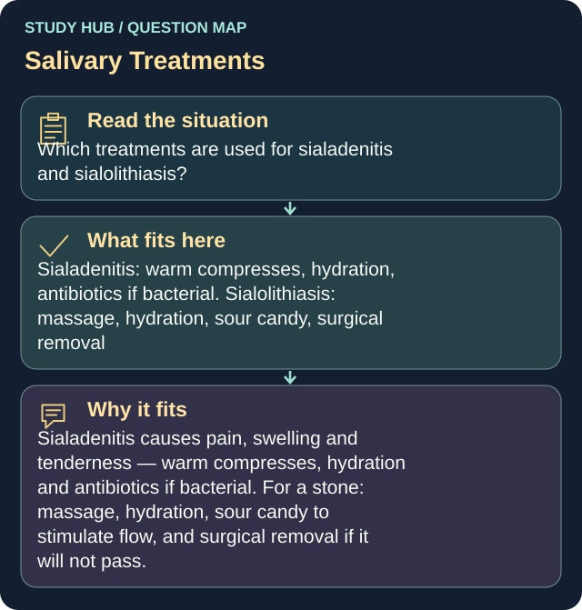

Which treatments are used for sialadenitis and sialolithiasis?
Answer
Sialadenitis: warm compresses, hydration, antibiotics if bacterial. Sialolithiasis: massage, hydration, sour candy, surgical removal
Reasoning
Sialadenitis causes pain, swelling and tenderness — warm compresses, hydration and antibiotics if bacterial.
Clinical detail
For a stone: massage, hydration, sour candy to stimulate flow, and surgical removal if it will not pass.
Why the other answers do not fit
- Both are treated with corticosteroids only
- Both require immediate surgery
- Neither requires treatment
Shared reasoning for choices without a separate note: Sialadenitis causes pain, swelling and tenderness — warm compresses, hydration and antibiotics if bacterial. For a stone: massage, hydration, sour candy to stimulate flow, and surgical removal if it will not pass.
